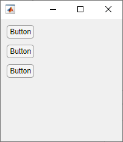

align
Align UIControl components and Axes
objects
Syntax
Description
Note
Using a grid layout manager to align components in your app is recommended over
align. For more information, see Alternative Functionality.
Align Objects in Column
align(
aligns the specified components in a column. The function aligns the left sides, centers,
or right sides of the objects depending on the value of components,hloc,spacing)hloc, and
adjusts the vertical spacing between the objects depending on the value of
spacing. For instance,
align(components,"left","none") aligns left edges and makes no
spacing adjustments. The size of each object does not change.
align(
adjusts the vertical spacing to be a fixed distance in points.components,hloc,"fixed",distance)
Align Objects in Row
align(
aligns the specified components in a row. The function aligns the top sides, middles, or
bottom sides of the objects depending on the value of components,spacing,vloc)vloc, and
adjusts the horizontal spacing between the objects depending on the value of
spacing. For instance,
align(components,"none","top") aligns top edges and makes no spacing
adjustments. The size of each object does not change.
align(
adjusts the horizontal spacing to be a fixed distance in points.components,"fixed",distance,vloc)
Align Overlapping Objects
align(
aligns the specified objects overlapping one another. This is equivalent to aligning the
objects in a column according to components,hloc,vloc)hloc and in a row according to
vloc. For example, align(components,"left","top")
aligns the top left corners of the objects in components.
Return Calculated Positions
positions = align(___) returns the calculated
positions for the specified objects as a matrix if they are aligned, but does not move the
objects. Each row of the matrix output is a position vector. Use this option with any of
the input argument combinations in the previous syntaxes.
positions = align(
returns the calculated positions for the objects whose positions are contained in
cpositions,___)cpositions if they are aligned, but the positions of the objects on
the figure do not change. Use this option with any of the input combinations in the
previous syntaxes, replacing components with
cpositions.
Examples
Input Arguments
Objects to align, specified as a vector of UIControl or
Axes objects. If the vector contains objects of types other than
UIControl or Axes, the align
function ignores them. Aligning objects does not change their sizes.
Horizontal locations of objects in components to align in a
column, specified as "left", "center", or
"right". This table describes each of the options.
| Result |
|---|---|
| Align the left edges of the objects. |
| Align the horizontal centers of the objects. |
| Align the right edges of the objects.
|
All alignment options justify the objects within the bounding box that encloses the
objects. The "left" option aligns the left edges of the objects with
the left edge of the bounding box that contains them, and likewise for
"right". The "center" option aligns the centers
of the objects with the center of the bounding box.
Spacing adjustment between objects, specified as "none" or
"distribute".
"none"— Do not change the spacing between objects. When aligning the objects in a column, do not move them vertically. When aligning objects in a row, do not move them horizontally."distribute"— Evenly distribute the objects. When aligning objects in a column, evenly distribute the objects vertically between the top and bottom edges of the bounding box that encloses them. When aligning objects in a row, evenly distribute the objects horizontally between the left and right edges of the bounding box that encloses them.
Vertical locations of objects in components to align in a row,
specified as "top", "middle", or
"bottom".
| Result |
|---|---|
| Align the top edges of the objects. |
| Align the vertical centers of the objects. |
| Align the bottom edges of the objects. |
All alignment options align the objects within the bounding box that encloses the
objects. The "top" option aligns the top edges of the objects with
the top edge of the bounding box that contains them, and likewise for
"bottom". The "middle" option aligns the middles
of the objects with the middle of the bounding box.
Fixed distance between objects, specified as a scalar in points, where 72 points equals 1 inch.
Current object positions, specified as a matrix whose rows are position vectors.
Each position vector is a four-element vector that specifies the location and size of
the object in the form [left bottom width height]. All position
vector measurements are in pixel units.
Alternative Functionality
Use a grid layout manager to align UI components in your app. Create a grid layout manager
by calling the uigridlayout
function or, in App Designer, dragging a Grid Layout component onto the
canvas.
For example, to align three buttons in a column in the upper-left corner of a figure, create a grid layout manager containing four rows and two columns. Specify that the first column and the first three rows scale to fit the components they contain. Then, create the three buttons and add them to the first three rows of the first column.
fig = uifigure;
fig.Position = [100 100 200 200];
gl = uigridlayout(fig);
gl.RowHeight = {'fit','fit','fit','1x'};
gl.ColumnWidth = {'fit','1x'};
btn1 = uibutton(gl);
btn1.Layout.Row = 1;
btn1.Layout.Column = 1;
btn2 = uibutton(gl);
btn2.Layout.Row = 2;
btn2.Layout.Column = 1;
btn3 = uibutton(gl);
btn3.Layout.Row = 3;
btn3.Layout.Column = 1;

Alternatively, in App Designer, use the Space options in the Canvas tab to align components in Design View. For more information, see Lay Out Apps in App Designer Design View.
Grid layout managers do not support UIControl objects. To use a grid
layout manager in an existing app with UIControl objects, first replace the
UIControl objects with UI components. For more information, see Update UIControl Objects and Callbacks.
Version History
Introduced in R2012b